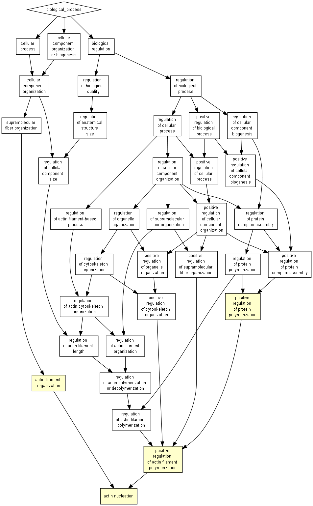

P-value color scale
| > 10-3 |
10-3 to 10-5 |
10-5 to 10-7 |
10-7 to 10-9 |
< 10-9 |

| GO term |
Description |
P-value |
FDR q-value |
Enrichment (N, B, n, b) |
Genes |
| GO:0045010 |
actin nucleation |
1.02E-5 |
1.55E-1 |
70.19 (18319,29,27,3) |
[+] Show genes
FMN1 - formin 1
JMY - junction mediating and regulatory protein, p53 cofactor
LMOD2 - leiomodin 2 (cardiac)
|
| GO:0030838 |
positive regulation of actin filament polymerization |
2.69E-4 |
1E0 |
23.67 (18319,86,27,3) |
[+] Show genes
FMN1 - formin 1
JMY - junction mediating and regulatory protein, p53 cofactor
LMOD2 - leiomodin 2 (cardiac)
|
| GO:0007015 |
actin filament organization |
3.01E-4 |
1E0 |
12.17 (18319,223,27,4) |
[+] Show genes
FMN1 - formin 1
ESPN - espin
JMY - junction mediating and regulatory protein, p53 cofactor
LMOD2 - leiomodin 2 (cardiac)
|
| GO:0032273 |
positive regulation of protein polymerization |
6.64E-4 |
1E0 |
17.40 (18319,117,27,3) |
[+] Show genes
FMN1 - formin 1
JMY - junction mediating and regulatory protein, p53 cofactor
LMOD2 - leiomodin 2 (cardiac)
|
Species used: Homo sapiens
The system has recognized 19375 genes out of 20107 gene terms entered by the user.
19375 genes were recognized by gene symbol and 0 genes by other gene IDs .
198 duplicate genes were removed (keeping the highest ranking instance of each gene) leaving a total of 19177 genes.
Only 18319 of these genes are associated with a GO term.
The GOrilla database is periodically updated using the GO database and other sources.
The GOrilla database was last updated on Jun 23, 2018
This results page will be available on this site for one month from now (until
Jul 25, 2018
). You can bookmark this page and come back to it later.
'P-value' is the enrichment p-value computed according to the mHG or HG model. This p-value is not corrected for multiple testing of 15276 GO terms.
'FDR q-value' is the correction of the above p-value for multiple testing using the Benjamini and Hochberg (1995) method.
Namely, for the ith term (ranked according to p-value) the FDR q-value is (p-value * number of GO terms) / i.
Enrichment (N, B, n, b) is defined as follows:
N - is the total number of genes
B - is the total number of genes associated with a specific GO term
n - is the number of genes in the top of the user's input list or in the target set when appropriate
b - is the number of genes in the intersection
Enrichment = (b/n) / (B/N)
Genes: For each GO term you can see the list of associated genes that appear in the optimal top of the list.
Each gene name is specified by gene symbol followed by a short description of the gene
Back to the GOrilla main page